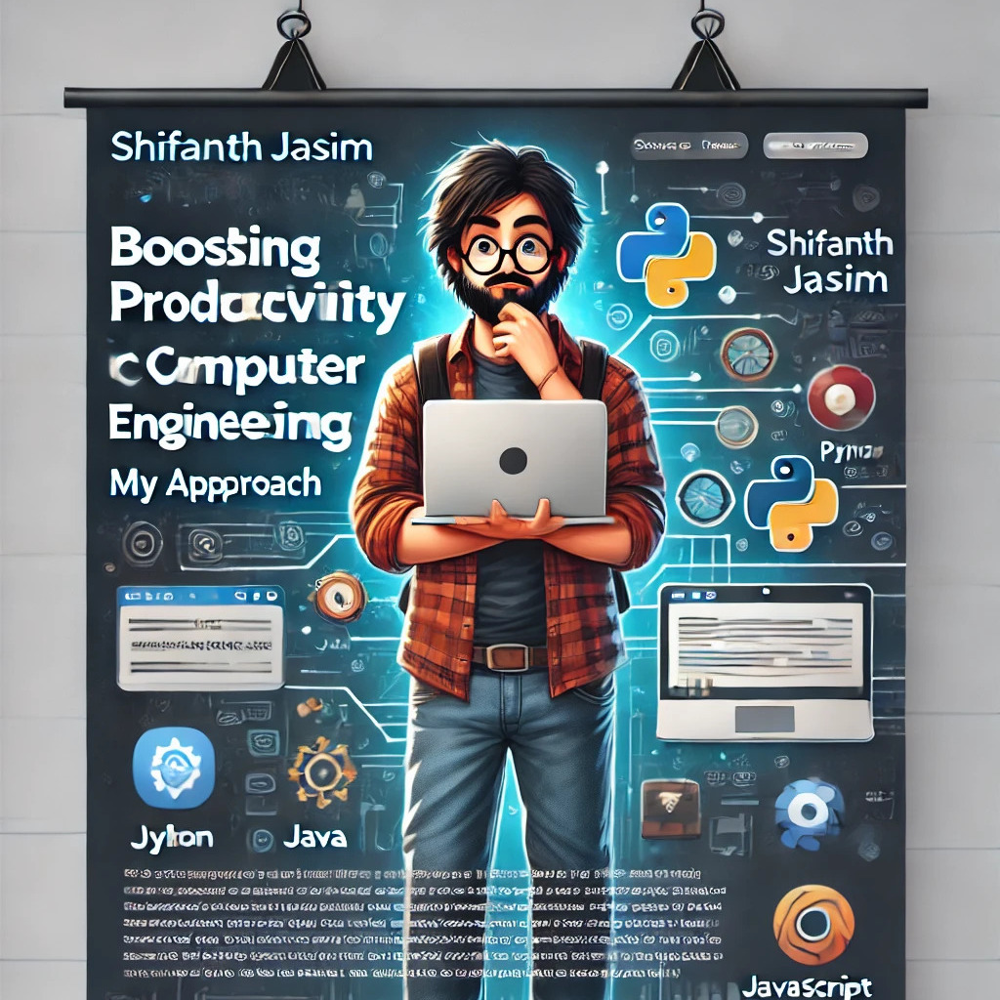

Navigating Productivity in Computer Engineering
Being immersed in this field, I deeply apprehend the significance of productivity. In the swiftly evolving tech landscape, all of us face the task of final applicable whilst turning in with a fantastic results. Through my adventure of balancing coding responsibilities, purchaser demands, and tight deadlines (all whilst keeping composure), I've found powerful strategies. I'm keen to percentage my insights on keeping productiveness withinside the dynamic realm of computer engineering.
What does productiveness imply for us?
In our chosen profession, productiveness extends past simply writing code. It encompasses dealing with coding, debugging, testing, collaborating, and staying updated with present-day advancements, all while ensuring our intellectual well-being. It's approximately efficaciously finishing duties while juggling more than one responsibility. By imposing the proper techniques, staying prepared and centered will become extra viable.
Mastering time control is important for fulfillment and stopping chaos. I've determined the Pomodoro Technique to be a game-changer for my productivity. This approach includes operating for 25 minutes, accompanied by the aid of a 5-minute break, and after 4 cycles, taking an extended break. I've observed that this technique is especially useful at some point of prolonged coding sessions because it allows hold intellectual clarity. By adopting this technique, you may enjoy much less burnout and a lift in productiveness.
Setting Realistic Goals
Once you've prepared your timetable effectively, it is essential to set viable goals. Break down large initiatives into smaller, extra conceivable duties. I individually depend upon equipment like Trello to keep myself prepared. I found out early on that a loss of enterprise can cause distractions. Dividing duties into smaller segments could make the workload sense lighter and decorate motivation.
Prioritizing
Setting goals is one thing, but you’ve got to prioritize. I use the Eisenhower Matrix to figure out what’s urgent and what’s important. By focusing on what truly matters first, you avoid chasing after low-priority tasks that don’t move the needle.

Keep Your Workspace in Check
I’m guilty of letting my workspace get messy, but I’ve noticed that a cluttered desk leads to a cluttered mind. A clean, organized setup makes it so much easier to focus. Plus, I swear by digital tools like Google Drive to keep my work files neat and easy to access.
Leverage Tech (But Don’t Get Distracted)
Technology can either make your day or ruin it. Using the right tools like Visual Studio Code or JetBrains IDEs can make coding way smoother. Automate repetitive stuff with scripts—less manual work means more time to focus on real challenges.
Never Stop Learning
In tech, staying still is the fastest way to fall behind. I block out time each week to learn something new, whether it’s through an online course or just tinkering with a new tool. If you're not learning, you're falling behind, and that's no good.
Teamwork Makes the Dream Work
Collaboration is huge in this field. Whether it’s quick chats over Slack or doing code reviews, working together boosts both productivity and quality. I’ve seen firsthand how regular meetings and proper communication channels keep things moving smoothly.
Agile Methodologies? Yes, Please
Agile methods like Scrum have been game changers for me. Breaking projects into smaller sprints keeps the team organized and responsive to changes. It’s made a huge difference in how my team approaches projects.
Avoid Burnout at All Costs
Let’s be real—this field can be overwhelming. I’ve learned the hard way that you’ve got to set boundaries and make time for hobbies, exercise, and relaxation. You’re no good to anyone if you’re burnt out. Stepping away from the keyboard can recharge your creativity in ways you wouldn’t expect.
Celebrate Wins, No Matter How Small
This one’s simple: take a moment to recognize your wins, even the small ones. Whether it’s finishing a tricky project or just learning something new, celebrating keeps you motivated for the next challenge.
In the end, productivity isn’t about working harder—it’s about working smarter. By applying these strategies, I’ve managed to navigate the busy world of computer engineering while keeping my sanity intact (most days).